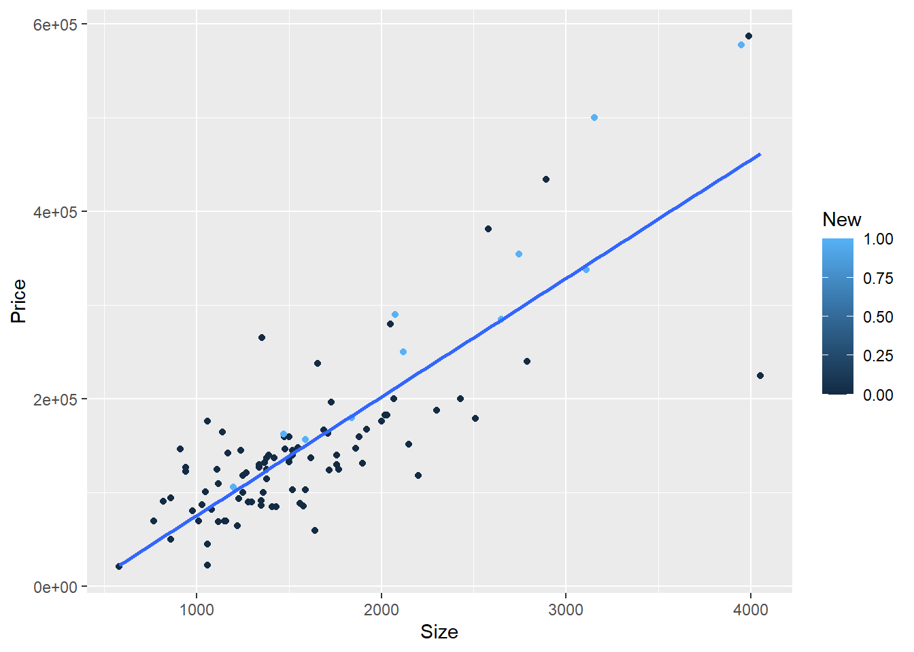
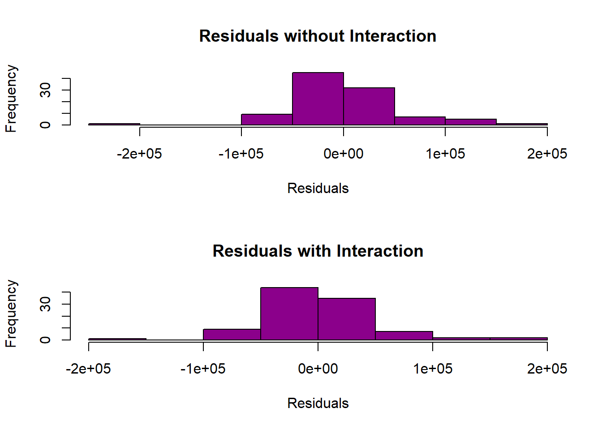

A. Predicted selling price: 107296
Residual: 37704
Based on the given variables, where y represents the selling price, and x1 and x2 represent the house size and lot size respectively, and using the prediction equation for a 1,240 sqft house on an 18,000 sqft lot, the estimated selling price is $107,296. However, the actual selling price of the house is $145,000, indicating that it sold for $37,704 more than the projected selling price.
B
Code
home_size_coefficient <-53.8cat("B. House selling price predicted to increase for each square-foot increase in home size:", home_size_coefficient, "\n")
B. House selling price predicted to increase for each square-foot increase in home size: 53.8
C
Code
home_size_increase <-1lot_size_coefficient <-2.84lot_size_increase <- (home_size_coefficient * home_size_increase) / lot_size_coefficientcat("C. Lot size increase needed to have the same impact as a one-square-foot increase in home size:", lot_size_increase, "\n")
C. Lot size increase needed to have the same impact as a one-square-foot increase in home size: 18.94366
Question 2
A
Code
library(alr4)data(salary)t_test <-t.test(salary ~ sex, data = salary)t_test
Welch Two Sample t-test
data: salary by sex
t = 1.7744, df = 21.591, p-value = 0.09009
alternative hypothesis: true difference in means between group Male and group Female is not equal to 0
95 percent confidence interval:
-567.8539 7247.1471
sample estimates:
mean in group Male mean in group Female
24696.79 21357.14
Irrespective of educational qualifications or employment hierarchy, the mean salary for men is $24,696.79, while the average income for women is $21,357.14, reflecting a difference of $3,339.65 between the two genders.
B
Code
model <-lm(salary ~ ., data = salary)conf_int <-confint(model, level =0.95)conf_int
Based on a multiple linear regression analysis with a 95% confidence level, the estimated pay gap between men and women ranges from -$697.82 to $3,030.57
C
Code
summary(model)
Call:
lm(formula = salary ~ ., data = salary)
Residuals:
Min 1Q Median 3Q Max
-4045.2 -1094.7 -361.5 813.2 9193.1
Coefficients:
Estimate Std. Error t value Pr(>|t|)
(Intercept) 15746.05 800.18 19.678 < 2e-16 ***
degreePhD 1388.61 1018.75 1.363 0.180
rankAssoc 5292.36 1145.40 4.621 3.22e-05 ***
rankProf 11118.76 1351.77 8.225 1.62e-10 ***
sexFemale 1166.37 925.57 1.260 0.214
year 476.31 94.91 5.018 8.65e-06 ***
ysdeg -124.57 77.49 -1.608 0.115
---
Signif. codes: 0 '***' 0.001 '**' 0.01 '*' 0.05 '.' 0.1 ' ' 1
Residual standard error: 2398 on 45 degrees of freedom
Multiple R-squared: 0.855, Adjusted R-squared: 0.8357
F-statistic: 44.24 on 6 and 45 DF, p-value: < 2.2e-16
In summary, there are several factors that impact wage increases, including a person’s educational qualifications and job rank. Specifically, individuals with a PhD experience an average wage increase of $1,388.61, while those in the rank of Associate Professor receive an increase of $5,292.36, and full/tenured Professors experience the highest increase of $11,118.75. Gender also plays a role, with females receiving a wage increase of $1,166.37. Additionally, for each year an individual remains at their current rank, they receive an increase of $476.31, except for individuals who have reached their maximum degree/rank level, as their salary decreases by $124.57 for each year after that. Notably, all slopes, except for the one related to maximum degree/rank level, are positive. The individual’s rank and the number of years spent at their current rank are both statistically significant, with p-values less than 0.05.
D
Code
# Change the baseline category for rank and rerun the modelsalary$rank <-relevel(salary$rank, ref ="Asst")model2 <-lm(salary ~ ., data = salary)summary(model2)
Call:
lm(formula = salary ~ ., data = salary)
Residuals:
Min 1Q Median 3Q Max
-4045.2 -1094.7 -361.5 813.2 9193.1
Coefficients:
Estimate Std. Error t value Pr(>|t|)
(Intercept) 15746.05 800.18 19.678 < 2e-16 ***
degreePhD 1388.61 1018.75 1.363 0.180
rankAssoc 5292.36 1145.40 4.621 3.22e-05 ***
rankProf 11118.76 1351.77 8.225 1.62e-10 ***
sexFemale 1166.37 925.57 1.260 0.214
year 476.31 94.91 5.018 8.65e-06 ***
ysdeg -124.57 77.49 -1.608 0.115
---
Signif. codes: 0 '***' 0.001 '**' 0.01 '*' 0.05 '.' 0.1 ' ' 1
Residual standard error: 2398 on 45 degrees of freedom
Multiple R-squared: 0.855, Adjusted R-squared: 0.8357
F-statistic: 44.24 on 6 and 45 DF, p-value: < 2.2e-16
There have been no changes to the values previously stated. Therefore, the wage increases and other factors mentioned in the previous statement remain the same.
E
Code
# Exclude the rank variable and rerun the modelmodel3 <-lm(salary ~ degree + sex + year + ysdeg, data = salary)summary(model3)
Call:
lm(formula = salary ~ degree + sex + year + ysdeg, data = salary)
Residuals:
Min 1Q Median 3Q Max
-8146.9 -2186.9 -491.5 2279.1 11186.6
Coefficients:
Estimate Std. Error t value Pr(>|t|)
(Intercept) 17183.57 1147.94 14.969 < 2e-16 ***
degreePhD -3299.35 1302.52 -2.533 0.014704 *
sexFemale -1286.54 1313.09 -0.980 0.332209
year 351.97 142.48 2.470 0.017185 *
ysdeg 339.40 80.62 4.210 0.000114 ***
---
Signif. codes: 0 '***' 0.001 '**' 0.01 '*' 0.05 '.' 0.1 ' ' 1
Residual standard error: 3744 on 47 degrees of freedom
Multiple R-squared: 0.6312, Adjusted R-squared: 0.5998
F-statistic: 20.11 on 4 and 47 DF, p-value: 1.048e-09
When the ‘rank’ variable is removed from the equation, the salary decrease is $3,299.35 for individuals with a PhD and $1,286.54 for females. On the other hand, salary gains occur at a rate of $351.97 for each year spent at the current level and $339.40 for each year after obtaining the highest degree. It is worth noting that half of the slopes are positive, while the other half are negative. Specifically, ‘degreePhD’, ‘year’, and ‘ysdeg’ are all statistically significant with p-values less than 0.05, while ‘sexFemale’ is not.
F
Code
# Create a new variable and run the multiple regression modelsalary$new_dean <-ifelse(salary$ysdeg <=15, "New", "Old")model4 <-lm(salary ~ degree + sex + new_dean + year*ysdeg, data = salary)summary(model4)
Call:
lm(formula = salary ~ degree + sex + new_dean + year * ysdeg,
data = salary)
Residuals:
Min 1Q Median 3Q Max
-8396.1 -2171.9 -352.5 2053.3 11061.3
Coefficients:
Estimate Std. Error t value Pr(>|t|)
(Intercept) 16855.764 1508.902 11.171 1.45e-14 ***
degreePhD -3205.140 1431.791 -2.239 0.0302 *
sexFemale -1222.794 1345.288 -0.909 0.3682
new_deanOld 550.409 2119.912 0.260 0.7963
year 462.292 277.040 1.669 0.1021
ysdeg 332.120 141.753 2.343 0.0236 *
year:ysdeg -4.525 10.083 -0.449 0.6557
---
Signif. codes: 0 '***' 0.001 '**' 0.01 '*' 0.05 '.' 0.1 ' ' 1
Residual standard error: 3814 on 45 degrees of freedom
Multiple R-squared: 0.6334, Adjusted R-squared: 0.5845
F-statistic: 12.96 on 6 and 45 DF, p-value: 1.902e-08
It is highly likely that there is a strong correlation between ‘year’ and ‘ysdeg’.
QUESTION 3
A
Code
library(smss)data(house.selling.price)model <-lm(Price ~ Size + New, data = house.selling.price)summary(model)
Call:
lm(formula = Price ~ Size + New, data = house.selling.price)
Residuals:
Min 1Q Median 3Q Max
-205102 -34374 -5778 18929 163866
Coefficients:
Estimate Std. Error t value Pr(>|t|)
(Intercept) -40230.867 14696.140 -2.738 0.00737 **
Size 116.132 8.795 13.204 < 2e-16 ***
New 57736.283 18653.041 3.095 0.00257 **
---
Signif. codes: 0 '***' 0.001 '**' 0.01 '*' 0.05 '.' 0.1 ' ' 1
Residual standard error: 53880 on 97 degrees of freedom
Multiple R-squared: 0.7226, Adjusted R-squared: 0.7169
F-statistic: 126.3 on 2 and 97 DF, p-value: < 2.2e-16
When controlling for size, the predictor variables ‘New’ and ‘Size’ have p-values of 0.00257 and 2e-16, respectively. Both of these p-values are statistically significant and less than the alpha level of 0.05. This indicates that the null hypothesis can be rejected, and there is likely a relationship between ‘New’ and ‘Price’, as well as between ‘Size’ and ‘Price’ for new homes. By computing the correlation coefficient, we can observe that the correlation between ‘New’ and ‘Size’ is 0.3843, indicating a weak relationship between the two variables.
Code
coefficients <-coef(model)coefficients
(Intercept) Size New
-40230.8668 116.1316 57736.2828
Warning: The following aesthetics were dropped during statistical transformation: colour
ℹ This can happen when ggplot fails to infer the correct grouping structure in
the data.
ℹ Did you forget to specify a `group` aesthetic or to convert a numerical
variable into a factor?

The scatterplot shows a linear/correlative relationship between the variables, where an increase in size is associated with an increase in price. However, when considering the colors of the dots (which represent the age of the homes), the relationship is not as straightforward. The new houses (light blue dots) are dispersed throughout the graph, mostly along the slope line. On the other hand, the older residences (dots that are not light blue) are mainly clustered in the bottom-right corner of the graph, although there are a few that have a higher price/size than brand new homes.
According to the given data, for a house with the specified measurements, the predicted selling price for a new home is $398,307.50, while for a not-new home, it is $291,087.40.
G
Code
# Calculate the predicted selling price for a home of 1500 square feetsize_1500 <-1500predicted_new_1500 <- coefficients_interaction[1] + coefficients_interaction[2] * size_1500 + coefficients_interaction[3] * new + coefficients_interaction[4] * size_1500 * newpredicted_not_new_1500 <- coefficients_interaction[1] + coefficients_interaction[2] * size_1500 + coefficients_interaction[3] * not_new + coefficients_interaction[4] * size_1500 * not_newpredicted_new_1500
(Intercept)
148776.1
Code
predicted_not_new_1500
(Intercept)
134429.8
The predicted selling price of a new 1500sqft home is $148,776.10, while the predicted selling price of a 1500sqft home that is not new is $134,429.80. These values are significantly lower than the expected selling prices in Part F, where the property size is doubled to 3000sqft. A new 3000sqft house is expected to sell for $398,307.50, while a new 1500sqft house is expected to sell for $148,694.70. The reduction in size and price by half shows a linear connection between the two variables.
In comparison to new dwellings, the price of not-new dwellings is more directly proportional to size. A 3000sqft house that is not new is expected to sell for $291,087.40, while a 1500sqft house that is not new is expected to sell for $134,429.80. The price difference between these two values is $156,657.6. Therefore, size has a more significant impact on the selling price of not-new homes than new ones.
H
Code
# Compare the adjusted R-squared valuessummary(model)$adj.r.squared
[1] 0.7168767
Code
summary(model_interaction)$adj.r.squared
[1] 0.7363181
Code
# Compare residuals' distributionpar(mfrow =c(2, 1))hist(residuals(model), main ="Residuals without Interaction", xlab ="Residuals", col ="darkmagenta")hist(residuals(model_interaction), main ="Residuals with Interaction", xlab ="Residuals", col ="darkmagenta")

I think that a model without an interaction term provides a better fit for the relationship between ‘Size’ and ‘New’ regarding the outcome variable price. On the other hand, the model with the interaction term better captures the relationship between ‘Size’ and ‘Price’ rather than ‘Size’ and ‘New’.
Source Code
---title: "Homework - 5"author: "Thrishul"description: "Homework 5"date: "05/05/2023"format: html: toc: true code-fold: true code-copy: true code-tools: truecategories: - hw5---# Question 1## A```{r}library(alr4)``````{r}library(smss)x1 <-1240x2 <-18000actual_price <-145000predicted_price <--10536+53.8* x1 +2.84* x2residual <- actual_price - predicted_pricecat("A. Predicted selling price:", predicted_price, "\nResidual:", residual, "\n")```Based on the given variables, where y represents the selling price, and x1 and x2 represent the house size and lot size respectively, and using the prediction equation for a 1,240 sqft house on an 18,000 sqft lot, the estimated selling price is $107,296. However, the actual selling price of the house is $145,000, indicating that it sold for $37,704 more than the projected selling price.## B```{r}home_size_coefficient <-53.8cat("B. House selling price predicted to increase for each square-foot increase in home size:", home_size_coefficient, "\n")```## C```{r}home_size_increase <-1lot_size_coefficient <-2.84lot_size_increase <- (home_size_coefficient * home_size_increase) / lot_size_coefficientcat("C. Lot size increase needed to have the same impact as a one-square-foot increase in home size:", lot_size_increase, "\n")```# Question 2## A```{r}library(alr4)data(salary)t_test <-t.test(salary ~ sex, data = salary)t_test```Irrespective of educational qualifications or employment hierarchy, the mean salary for men is $24,696.79, while the average income for women is $21,357.14, reflecting a difference of $3,339.65 between the two genders.## B```{r}model <-lm(salary ~ ., data = salary)conf_int <-confint(model, level =0.95)conf_int```Based on a multiple linear regression analysis with a 95% confidence level, the estimated pay gap between men and women ranges from -$697.82 to $3,030.57## C```{r}summary(model)```In summary, there are several factors that impact wage increases, including a person's educational qualifications and job rank. Specifically, individuals with a PhD experience an average wage increase of $1,388.61, while those in the rank of Associate Professor receive an increase of $5,292.36, and full/tenured Professors experience the highest increase of $11,118.75. Gender also plays a role, with females receiving a wage increase of $1,166.37. Additionally, for each year an individual remains at their current rank, they receive an increase of $476.31, except for individuals who have reached their maximum degree/rank level, as their salary decreases by $124.57 for each year after that. Notably, all slopes, except for the one related to maximum degree/rank level, are positive. The individual's rank and the number of years spent at their current rank are both statistically significant, with p-values less than 0.05.## D```{r}# Change the baseline category for rank and rerun the modelsalary$rank <-relevel(salary$rank, ref ="Asst")model2 <-lm(salary ~ ., data = salary)summary(model2)```There have been no changes to the values previously stated. Therefore, the wage increases and other factors mentioned in the previous statement remain the same.## E```{r}# Exclude the rank variable and rerun the modelmodel3 <-lm(salary ~ degree + sex + year + ysdeg, data = salary)summary(model3)```When the 'rank' variable is removed from the equation, the salary decrease is $3,299.35 for individuals with a PhD and $1,286.54 for females. On the other hand, salary gains occur at a rate of $351.97 for each year spent at the current level and $339.40 for each year after obtaining the highest degree. It is worth noting that half of the slopes are positive, while the other half are negative. Specifically, 'degreePhD', 'year', and 'ysdeg' are all statistically significant with p-values less than 0.05, while 'sexFemale' is not.## F```{r}# Create a new variable and run the multiple regression modelsalary$new_dean <-ifelse(salary$ysdeg <=15, "New", "Old")model4 <-lm(salary ~ degree + sex + new_dean + year*ysdeg, data = salary)summary(model4)```It is highly likely that there is a strong correlation between 'year' and 'ysdeg'. # QUESTION 3## A```{r}library(smss)data(house.selling.price)model <-lm(Price ~ Size + New, data = house.selling.price)summary(model)```When controlling for size, the predictor variables 'New' and 'Size' have p-values of 0.00257 and 2e-16, respectively. Both of these p-values are statistically significant and less than the alpha level of 0.05. This indicates that the null hypothesis can be rejected, and there is likely a relationship between 'New' and 'Price', as well as between 'Size' and 'Price' for new homes. By computing the correlation coefficient, we can observe that the correlation between 'New' and 'Size' is 0.3843, indicating a weak relationship between the two variables.```{r}coefficients <-coef(model)coefficients```## C```{r}# Calculate the predicted selling pricesize <-3000new <-1not_new <-0predicted_new <- coefficients[1] + coefficients[2] * size + coefficients[3] * newpredicted_not_new <- coefficients[1] + coefficients[2] * size + coefficients[3] * not_newpredicted_new``````{r}predicted_not_new```if a house is new, the estimated selling price is $365,900.20. However, if the house is not new, the predicted selling price is $308,163.90.## D```{r}model_interaction <-lm(Price ~ Size * New, data = house.selling.price)summary(model_interaction)```## E```{r}coefficients_interaction <-coef(model_interaction)coefficients_interaction``````{r}library(ggplot2)ggplot(data=house.selling.price,aes(x=Size,y=Price, color=New))+geom_point()+geom_smooth(method="lm",se=F)```The scatterplot shows a linear/correlative relationship between the variables, where an increase in size is associated with an increase in price. However, when considering the colors of the dots (which represent the age of the homes), the relationship is not as straightforward. The new houses (light blue dots) are dispersed throughout the graph, mostly along the slope line. On the other hand, the older residences (dots that are not light blue) are mainly clustered in the bottom-right corner of the graph, although there are a few that have a higher price/size than brand new homes.## F```{r}# Calculate the predicted selling price with interactionpredicted_new_interaction <- coefficients_interaction[1] + coefficients_interaction[2] * size + coefficients_interaction[3] * new + coefficients_interaction[4] * size * newpredicted_not_new_interaction <- coefficients_interaction[1] + coefficients_interaction[2] * size + coefficients_interaction[3] * not_new + coefficients_interaction[4] * size * not_newpredicted_new_interaction``````{r}predicted_not_new_interaction```According to the given data, for a house with the specified measurements, the predicted selling price for a new home is $398,307.50, while for a not-new home, it is $291,087.40.## G```{r}# Calculate the predicted selling price for a home of 1500 square feetsize_1500 <-1500predicted_new_1500 <- coefficients_interaction[1] + coefficients_interaction[2] * size_1500 + coefficients_interaction[3] * new + coefficients_interaction[4] * size_1500 * newpredicted_not_new_1500 <- coefficients_interaction[1] + coefficients_interaction[2] * size_1500 + coefficients_interaction[3] * not_new + coefficients_interaction[4] * size_1500 * not_newpredicted_new_1500``````{r}predicted_not_new_1500```The predicted selling price of a new 1500sqft home is $148,776.10, while the predicted selling price of a 1500sqft home that is not new is $134,429.80. These values are significantly lower than the expected selling prices in Part F, where the property size is doubled to 3000sqft. A new 3000sqft house is expected to sell for $398,307.50, while a new 1500sqft house is expected to sell for $148,694.70. The reduction in size and price by half shows a linear connection between the two variables.In comparison to new dwellings, the price of not-new dwellings is more directly proportional to size. A 3000sqft house that is not new is expected to sell for $291,087.40, while a 1500sqft house that is not new is expected to sell for $134,429.80. The price difference between these two values is $156,657.6. Therefore, size has a more significant impact on the selling price of not-new homes than new ones.## H```{r}# Compare the adjusted R-squared valuessummary(model)$adj.r.squared``````{r}summary(model_interaction)$adj.r.squared``````{r}# Compare residuals' distributionpar(mfrow =c(2, 1))hist(residuals(model), main ="Residuals without Interaction", xlab ="Residuals", col ="darkmagenta")hist(residuals(model_interaction), main ="Residuals with Interaction", xlab ="Residuals", col ="darkmagenta")```I think that a model without an interaction term provides a better fit for the relationship between ‘Size’ and ‘New’ regarding the outcome variable price. On the other hand, the model with the interaction term better captures the relationship between ‘Size’ and ‘Price’ rather than ‘Size’ and ‘New’.```{r}``````{r}``````{r}```